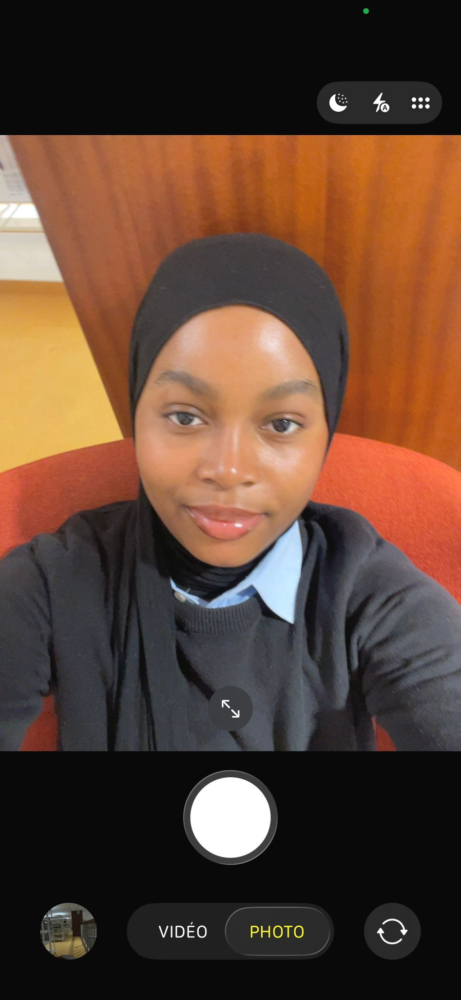
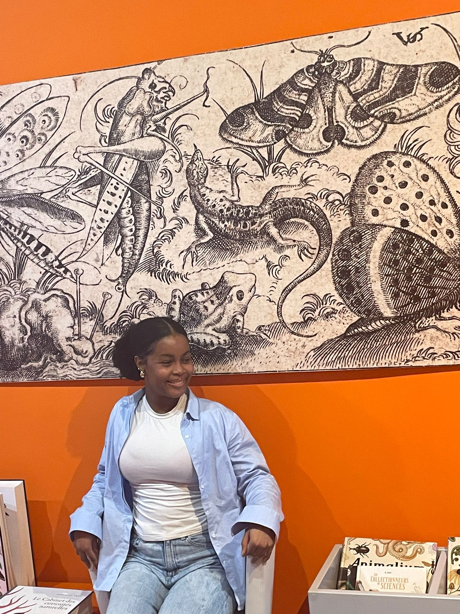

Étudiante en L1 Administration Économique et Sociale
Université Rennes 2 · 2025 – 2026

Qui suis-je ?
Je suis Aissata Yero Bah, étudiante actuellement inscrite en première année de Licence Administration Économique et Sociale (AES) à l'Université Rennes 2.
Née en Guinée, j'ai grandi avec la conviction profonde que l'éducation est la clé de l'émancipation personnelle et collective. Mon parcours a été marqué dès le départ par une grande curiosité intellectuelle, d'abord orientée vers les sciences naturelles, puis progressivement vers les sciences humaines et sociales.
Mon arrivée en France en 2024 représente pour moi un nouveau départ , une opportunité de m'ouvrir à de nouvelles disciplines et de construire un projet professionnel solide dans les domaines de l'économie, du droit et de l'administration publique.
Curieuse, déterminée et rigoureuse, j'aborde chaque défi comme une opportunité d'apprendre et de progresser. Mon parcours atypique, entre sciences exactes et sciences sociales, entre Guinée et France, forge un regard unique que je considère comme une richesse.

Mon histoire
Guinée
Scolarité effectuée en Guinée dans la filière scientifique. Je développe dès le lycée un goût prononcé pour les matières scientifiques et une méthode de travail rigoureuse qui m'accompagnera tout au long de mon parcours.
Mention Assez Bien — Guinée
Obtention du Baccalauréat en Sciences Expérimentales avec la mention Assez Bien, validant des compétences solides en biologie, physique-chimie et sciences de la vie et de la Terre. Ce diplôme ouvre pour moi les portes de l'enseignement supérieur.
Université de Boké, Guinée
Études supérieures en Sciences de la Terre à l'Université de Boké. Cette formation pratique et exigeante me permet d'allier théorie et terrain, notamment à travers un stage de découverte encadré par mes professeurs sur les ressources naturelles de la région.
Université de Lorraine, Nancy
Arrivée en France et inscription en Sciences de la Terre à l'Université de Lorraine à Nancy. Une première immersion dans le système universitaire français : ses codes, ses méthodes pédagogiques, et son exigence d'autonomie constituent autant de nouveaux défis à relever.
Université Rennes 2
Choix de réorientation vers l'Administration Économique et Sociale à l'Université Rennes 2. Une décision mûrement réfléchie, motivée par l'envie d'explorer les sciences sociales, le droit et l'économie des disciplines en prise directe avec les enjeux de développement qui me tiennent profondément à cœur.
Réflexivité
Dans le cadre de mes études en Sciences de la Terre à l'Université de Boké, j'ai participé à un stage de découverte sur le terrain avec mes camarades de classe, encadré par nos professeurs. Ce stage nous a menés à la découverte de gisements de fer ainsi que de plages de la région. Nos professeurs nous ont expliqué la formation de ces ressources naturelles et leur importance économique et environnementale. À l'issue du terrain, nous avons approfondi nos recherches par groupes pour constituer une brochure illustrée de photos, et nous avons soutenu nos travaux devant nos professeurs.
Durant mes études en Sciences de la Terre à l'Université de Boké, j'ai participé à un stage de découverte sur le terrain organisé avec mes camarades et encadré par nos professeurs. Nous avons visité des gisements de fer ainsi que des plages de la région. Nos encadrants nous ont expliqué comment se forment ces ressources naturelles et leur importance économique et environnementale. Après le terrain, nous avons travaillé en groupes pour constituer une brochure illustrée de photos des sites visités, que nous avons ensuite soutenue devant nos professeurs.
J'ai ressenti beaucoup d'enthousiasme et de curiosité dès les premières heures sur le terrain : voir concrètement ce que j'avais appris en cours était une expérience nouvelle et stimulante. Lors du travail de groupe pour la brochure, j'ai également éprouvé une certaine pression — la soutenance approchait, il fallait coordonner les contributions de chacun et structurer le contenu de façon cohérente. Cette pression m'a poussée à me dépasser et à rester concentrée sur l'objectif commun.
Ce qui a bien fonctionné : la cohésion du groupe a été un vrai point fort. Chacun a apporté sa contribution et le fait de travailler sur des données collectées nous-mêmes a rendu le travail concret et motivant. La soutenance s'est bien déroulée.
Ce qui a été difficile : organiser le travail collectif dans un délai serré a demandé des efforts importants. Il a parfois fallu concilier des approches différentes et s'assurer que tout le monde avançait au même rythme.
Les difficultés s'expliquent par le fait que c'était pour beaucoup une première expérience de travail en groupe avec une production écrite et une soutenance formelle. Nous n'avions pas encore développé les réflexes de répartition des tâches et de suivi collectif. La contrainte de temps a également amplifié ces difficultés, laissant peu de marge pour corriger les écarts d'avancement.
Ce stage m'a permis de développer plusieurs compétences : le sens de l'organisation, la capacité à travailler sous pression, l'attention aux détails sur le terrain, et surtout la valeur du travail en équipe — s'écouter, respecter les idées des autres et avancer ensemble. J'ai compris que la théorie prend tout son sens confrontée à la réalité du terrain.
Si c'était à refaire, je proposerais dès le départ une répartition claire des rôles — rédaction, mise en page, sélection des photos — pour éviter doublons et retards. Je veillerais aussi à fixer des points d'étape réguliers. Ces apprentissages, je les applique aujourd'hui dans mes travaux de groupe à Rennes 2.